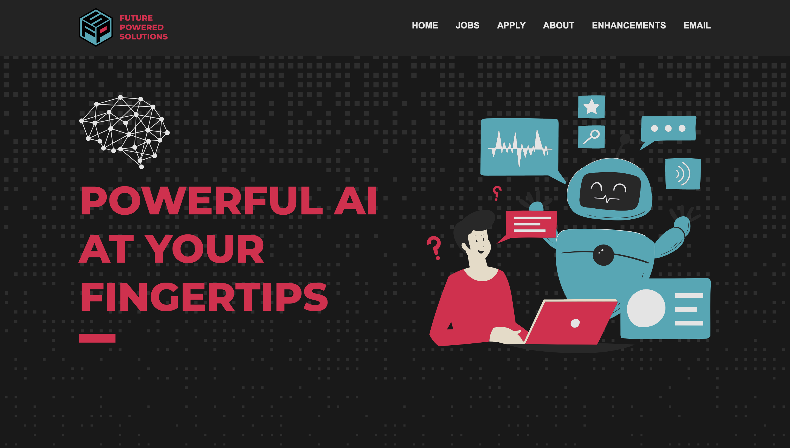
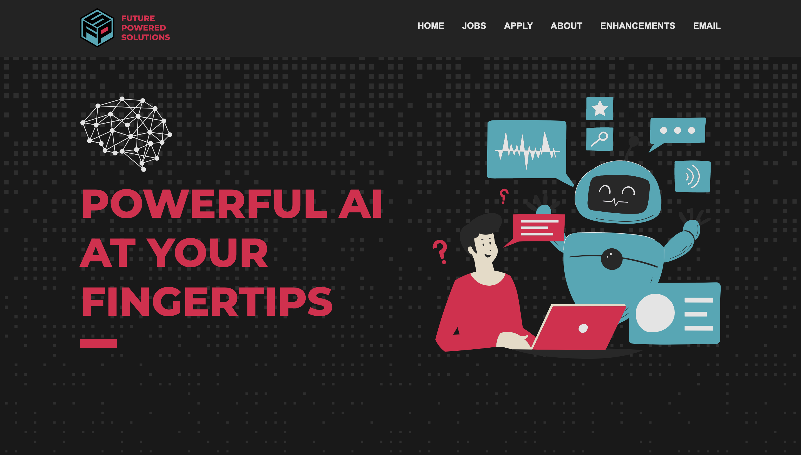

ENHANCEMENTS


üé® Dynamic themes
What is it?
Our website automatically changes the theme to match your system settings.
This creates a more personalized user experience.
You are using light mode

You are using dark mode

 

How is it implemented?
Using the prefers-color-scheme feature in media queries, we set the global colors based on the system theme.
The dark mode's accent colors are slightly muted compared to their light mode counterparts.

Additionally, we create 2 folders images/light and images/dark to store icons with appropriate colors.
To change between the icons, we use light-mode-element and dark-mode-element classes whose display property is set by the media query.
Where did we get the idea?
We took the initial inspiration from
this video

 and continued developing on our own.
and continued developing on our own.
üçî Hamburger Menu
What is it?
The horizontal navigation layout switches to a hamburger menu for mobile devices.
This creates a more responsive design.
How is it implemented?
First, the hamburger menu icons are hidden by default (desktop) and are shown on mobile using the media query.
Then, we assign an id to the nav-list element, and the open-hamburger-menu icon has an href to that id.
This means when the user clicks on the open-hamburger-menu icon, the nav-list is targeted, so we can use the pseudo-class :target selector to expand it.
To close the menu, the close-hamburger-menu has the href="#", which means when clicked on, the nav-list is no longer targeted, so the menu closes.
Where did we get the idea?
We learned this implementation from
this article

 and adjusted it to our preferences.
and adjusted it to our preferences.